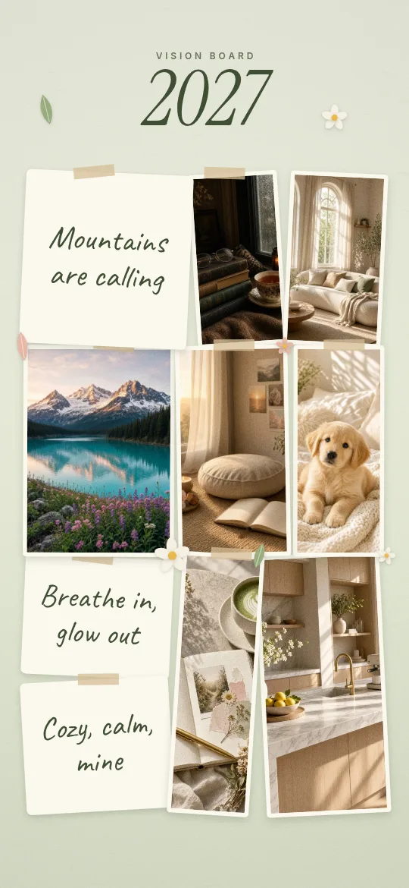

2027 AESTHETIC · COTTAGECORE
Cottagecore vision board: a slow-living 2027 lock screen
Gardens, bread on the counter, a dog at your feet and nowhere to rush. Cottagecore is for slow-living goals: a home with plants, more time outside and a calmer pace.



The Cottagecore look in one line
Sage, moss, oat and cream with paper texture, washi-tape photo corners, little flowers and handwritten notes.
What to put on it
- A sunny kitchen for home goals
- Mountains or a meadow for nature
- A meditation corner for inner peace
- Books and a journal for growth
- A puppy for the pet you are planning
In Glowboard you just tap the goals you want (travel, money, love, style and more) and the matching photos and affirmations are added for you. You can also add your own photos. They stay on your phone.
Tips for a board you will actually look at
- Handwritten text cards feel like a real scrapbook. Add 1–2 custom goals.
- Keep photos warm and natural, avoiding neon.
- Great for a quarterly reset: swap the season photo every few months.
- “Sunlight, plants & peace”
- “Small steps, big life”
- “Cozy, calm, mine”
- “I am calm and grounded”
- “Home is my sanctuary”
How to set it as your lock screen
iPhone: tap Save image (or long-press and choose “Save to Photos”). Open Photos, tap Share, then Use as Wallpaper. Android: open the image in Gallery or Google Photos, tap ⋮, then Set as wallpaper, then Lock screen.
FAQ
Is Cottagecore free?
Cottagecore is a Pro look. Preview it free and unlock it once for $4.99.
Can I add photos of my own pet?
Yes. Upload them and they are placed into the collage. They never leave your device.
More 2027 looks


Glowboard is a free vision board wallpaper maker. There is no sign-up, and your photos never leave your device.